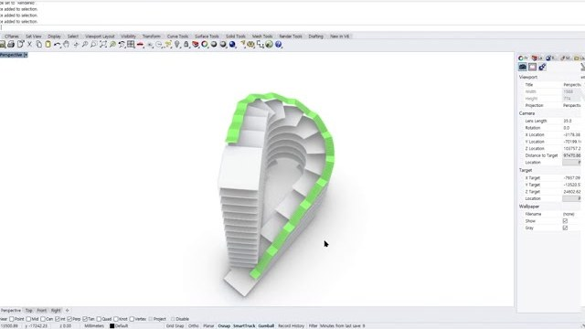
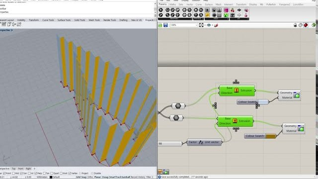

1. 소개
건축을 전공하고 경관디자인 일을 했습니다. 일하면서 지적도와 현장 사진을 오래 다루다 보니, 그 일을 덜어 줄 도구를 직접 만들게 되었습니다. 무엇을 만들지 정하고 직접 써 보며 다듬는 건 제 몫이고, 코드는 대부분 Claude Code와 함께 씁니다.
주말에는 자전거를 타고 풍경 사진을 찍습니다.
2. 만든 것들
| 이름 | 무엇을 하나요 |
|---|---|
| ■ 지금 쓸 수 있는 것 | |
|
여백 글만 남기는 메모장 안드로이드 · 아이폰프라이빗 저장소 |
화면에는 글과 커서만 둡니다. 저장 버튼도 메뉴도 없고, 기능은 숨겨 두었다가
안드로이드 APK · 아이폰 홈 화면 앱(PWA) |
|
필지 pilji.kr 서비스 중프라이빗 저장소 |
지번을 넣으면 그 땅과 주변 필지·건물을 그린 A4 도면을 만들어 줍니다. SVG · PNG · PDF로 저장합니다. JavaScript · Node.js(Express) · Leaflet · proj4 · 브이월드 API |
|
plotscape plotscape.kr 서비스 중프라이빗 저장소 |
현장·드론 사진 위에 지적도를 원근에 맞게 겹쳐 조사 자료용 그림을 만듭니다. 사진의 위치·방향 정보로 도면을 저절로 놓고, 계산은 모두 브라우저 안에서 합니다. TypeScript · React · Vite · Zustand · IndexedDB(Dexie) · Tailwind 사이트 열기 · 첫 버전 landviewer (공개 · 보관됨) |
| ■ 만들고 있는 것 | |
|
JibunToList 개발 중프라이빗 저장소 |
실태조사용 정리 도구. 엑셀의 지번 목록으로 필지별 폴더를 만들고, 항공사진·토지이용계획 캡처를 지번 이름으로 정리해 넣습니다. 실행 버튼을 누르기 전까지는 디스크에 아무것도 쓰지 않습니다. C# · .NET 10 · WPF(코어 단위 테스트 139개) → React · TypeScript 웹판으로 옮기는 중 |
|
LightDesk (임시 이름) 개발 중프라이빗 저장소 |
윈도우 11용 오픈소스 사진 보정 앱. 원본은 그대로 두는 비파괴 보정을, 내장 그래픽 노트북에서도 가볍게 돌리는 것이 목표입니다. C# · .NET 10 · Avalonia · MIT 라이선스 |
| ■ 나를 위해 만든 것 | |
|
한능검 학습 도우미 개인용프라이빗 저장소 |
한국사능력검정시험 심화 공부용 앱. 틀린 문제를 문항 번호 → 시대 → 키워드 → 사건 순서로 되짚게 하고, 입력하는 과정이 곧 서브노트가 됩니다. TypeScript · React · Zustand · Vitest |
|
paycycle 개인용프라이빗 저장소 |
월급일부터 다음 월급 전날까지를 한 주기로 보는 가계부. 모든 거래를 적지 않고, 마감 때 통장 잔액 하나로 이번 주기의 지출을 거꾸로 계산합니다. TypeScript · Next.js · PostgreSQL · Drizzle · 아이폰 홈 화면 앱(PWA) |
| ■ 처음 만든 것들 | |
|
라이노 파이썬 모델링 그래스호퍼 · 2020 유튜브 |
라이노의 그래스호퍼 안에서 파이썬 스크립트로 건물 형태를 만들어 본 영상입니다. 코드를 한 줄씩 짜며 모양이 바뀌는 과정을 보여 줍니다.  돌아가는 건물 만들기 2020.10.04 곡면 위에 일정한 간격으로 선을 깔고, 그 선들을 이어(로프트) 나선형으로 감아 도는 건물 외피를 만듭니다. 지그재그 창문 만들기 2020.10.15 곡선 위의 점을 사분면에 따라 번갈아 밀어내 지그재그 선을 만들고, 위로 뽑아 루버 창을 세웁니다.Python(GhPython) · Rhino · Grasshopper |
|
자전거길 지도 2024 |
네이버 지도 API 위에 자전거길 레이어와 오픈스트리트맵 타일을 겹쳐 본 지도. 처음으로 끝까지 만들어 본 웹 페이지입니다. JavaScript · jQuery · 네이버 지도 API |
※ 프라이빗 저장소 — 소스 코드는 비공개입니다.
3. 다루는 것
| 일하는 방식 | 무엇을 만들지 정하고 문서로 먼저 적습니다. 코드는 대부분 Claude Code가 쓰고, 저는 방향을 잡고 직접 써 보며 다듬습니다. Ubuntu와 VS Code에서 작업하고 GitHub에 올립니다. |
|---|---|
| 써 본 AI |
Claude — Claude Code로 코드를 함께 씁니다 ChatGPT — OpenAI Google AI — Gemini Midjourney — 이미지 만들기 모두 직접 구독해서 다뤄 본 것들입니다. |
| 설계 시절 | 라이노, 그래스호퍼, 스케치업, 일러스트레이터 |
4. 새 소식
| 번호 | 제목 | 날짜 |
|---|---|---|
| 12 | 홈페이지를 새로 꾸몄습니다 N | 2026.10 |
| 11 | 여백 — 글만 남기는 메모장을 만들기 시작했습니다 N | 2026.10.06 |
| 10 | paycycle — 월급 주기 가계부를 만들기 시작했습니다 | 2026.10.04 |
| 9 | 한능검 학습 도우미 — 공부하면서 쓸 앱을 만들었습니다 | 2026.09.28 |
| 8 | LightDesk — 윈도우용 사진 보정 앱을 시작했습니다 | 2026.09.25 |
| 7 | plotscape — landviewer를 보관하고 새로 만들기 시작했습니다 | 2026.09.20 |
| 6 | JibunToList — 설계와 코어 로직을 마치고 웹판으로 옮기기로 했습니다 | 2026.09.14 |
| 5 | 필지 — 지번으로 A4 도면을 뽑는 웹 도구를 시작했습니다 | 2026.09.12 |
| 4 | landviewer — 현장 사진 위에 지적도를 겹치는 첫 버전 | 2025.09.20 |
| 3 | 자전거길 지도에 자전거 레이어 버튼을 붙였습니다 | 2024.05.12 |
| 2 | 지그재그 창문 만들기 영상을 올렸습니다 | 2020.10.15 |
| 1 | 돌아가는 건물 만들기 영상을 올렸습니다 | 2020.10.04 |
5. 연락처
앱이나 코드에 대한 문의는 메일로 보내 주세요.
전자우편: gregleeform@gmail.comGitHub: github.com/gregleeform